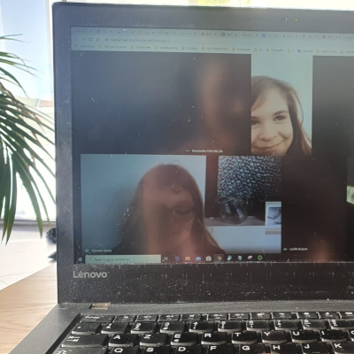

Circuit Smile
Victoria et Vincent, tous deux fans de triathlon, nous proposent de les accompagner 3 fois par semaine pour 45 minutes de circuit training qui a lieu depuis leur salon lillois. Au programme : cardio, proprioception, renforcement du haut et du bas du corps, le tout en musique et avec le sourire. Tous connectés en vidéo, c'est encore plus sympa pour partager ce moment. Que vous soyez ou pas en activité, les séances ont lieu à 12h15, histoire qu'un max de monde puisse en profiter et n'hésitez pas à inviter vos enfants et ados, ils vous impressionneront certainement par leurs talents sportifs.
Pour participer, il suffit de vous inscrire en ligne.
> S'inscrire
Victoria et Vincent ne sont pas profs de sport, ils ont juste envie de partager un moment sympa avec nous de façon totalement bénévole. Si vous appréciez et que l'envie vous en dit, pensez à la petite cagnotte créée pour soutenir ceux qui en ont besoin en ce moment.
> Je fais un petit don

Kids Smile
Sophie, maman d'une chipie de 8 ans, propose des activités en visio pour les enfants de 7 à 10 ans histoire de maintenir le lien social sans pour autant que les enfants soient livrés à eux-mêmes devant leurs écrans. Petits jeux de réflexion, défis, sports,... il y en a pour tous les goûts. L'activité est limitée à 8 enfants pour son bon déroulé et pour faciliter les échanges entre tous. Pour participer, merci de vous inscrire en ligne.
> S'inscrire
Sophie est certes ancienne animatrice mais n'a pas vocation aujourd'hui à en faire son métier. Elle a juste envie de partager un moment sympa avec les plus petits de façon totalement bénévole. Si vous appréciez et que l'envie vous en dit, pensez à la petite cagnotte créée pour soutenir ceux qui en ont besoin en ce moment.
> Je fais un petit don